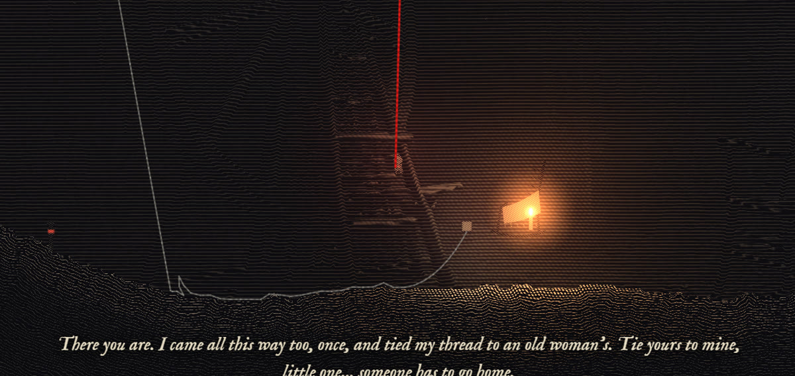
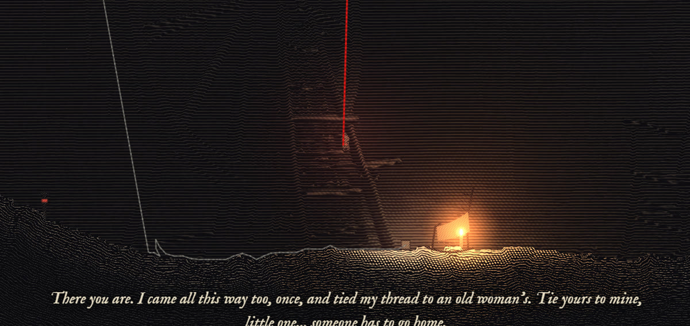

The short list, done firstbefore the long work on the deep
You listed four short problems: the thread breaking at the ink islands, the red thread carrying over into a new game, the chair floating in the Loom, and the trumpets at the end. All four are fixed and checked in the game. The model, the longer game, the Loom and the ending are the long work, and they get their own pages.
Something is constantly destroying the thread in the part where I jump over the holes with water, there are no moths and I don't seem to be able to avoid it.
The culprit was the ink dripping from the stalactites. Two of them hang right over islands you have to cross. Your thread lies across those islands behind you, and any drop that landed on it cut it at once. A drop falls every three or four seconds. The cut only showed when your next swing caught nothing and you fell into the ink just short of the next island. Your own session logs show it: about thirty ink deaths across two evenings, nearly all at the same two spots (x 81.5 and x 70.4).
I reproduced it with a test that plays the whole crossing from the shore pole with real physics, drips on and the thread kept behind you as in play:
| Crossing, shore to the sixth island | Before | After |
|---|---|---|
| Runs that got across | 1 of 10 | 15 of 16 |
| Thread cut by a drip | 9 times, under the drips at x 89 and x 46 | never |
| Thread eaten by the ink itself | never | never |
| Remaining failure | — | a drop hit the doll mid-swing; you can see it falling and time the swing |
After starting the game again the thread that we are following remains red, even though it should be grey since it is a new game.
The ending's red pulse up her thread was stored outside the world. A new game built a fresh world but never cleared it, so her thread came back red. It's now cleared when a new game begins and when you return to the title. The title also shows a fresh cottage, not the last run's lit window. Tested: tie at the end, let the pulse climb, then begin again. The pulse is gone and the thread is grey.
The chair in the end is floating in the air, fix it.


BeforeAfterDrag the thread to compare
The chair, the spool and the candle were drawn at the height of the end of her grey thread, which was pinned in mid-air. The thread now ends on the floor, and the chair, spool and candle are placed on the ground the game finds under them.
Please remove that heroic trumpets music from the end of the game, it is completely unsuitable.
That was a stock orchestral cue ("Heartbreaking"). It played from the tie, through the epilogue film and under the credits. It's gone from all three. In its place is a dirge made from the game's own sounds:
Nothing in it rises or resolves. Most of its sound sits below 200 Hz (75%, against 5% for the old cue). The epilogue film was re-cut with the new soundtrack; the picture is unchanged.
app/src/world.jsDrops splash off the thread; the chair, spool and candle find the floor.app/src/main.jsThe ending state is cleared on a new game and at the title.app/src/level.js · draw.jsHer grey thread ends on the floor; the chair, spool and candle are drawn on the ground.scripts/audio/build_audio.pyThe new mus_end recipe; app/assets/cine/outro.mp4 re-cut with it.